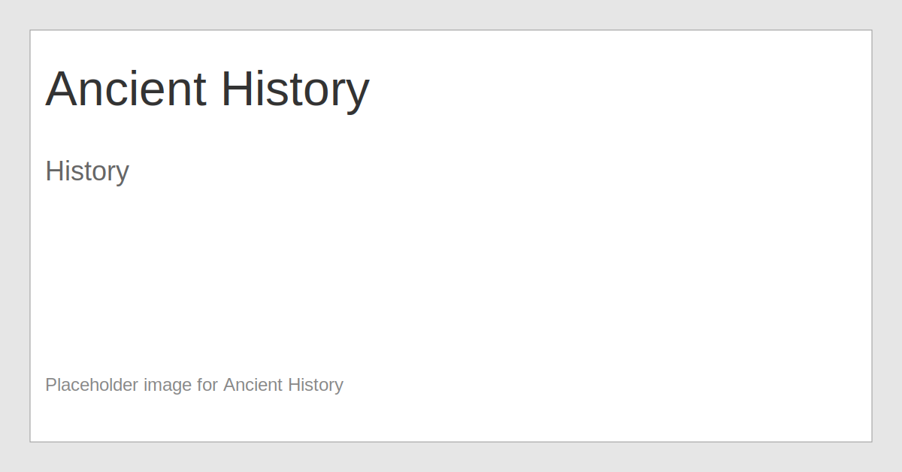

Ancient History
Ancient history looks at the earliest civilizations and their enduring legacies.
Tip: Use the Back button above to return to the homepage. The homepage loads with only the three top-level subjects visible.
Ancient history looks at the earliest civilizations and their enduring legacies.
Tip: Use the Back button above to return to the homepage. The homepage loads with only the three top-level subjects visible.